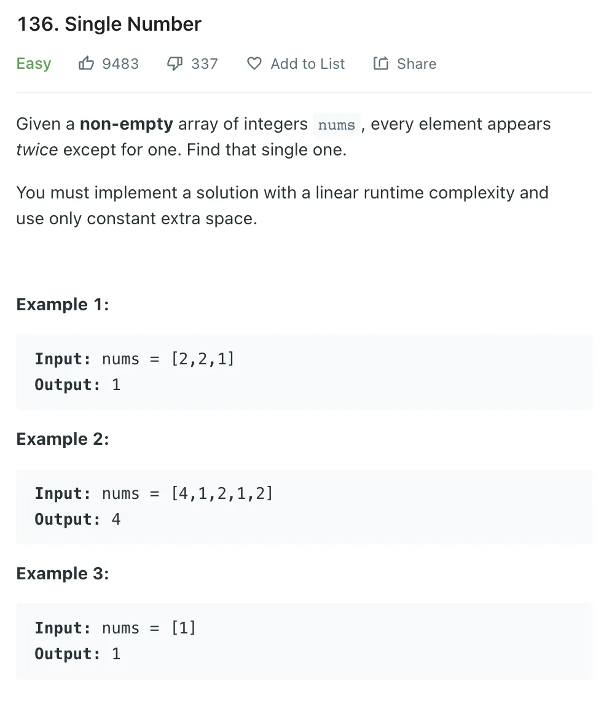
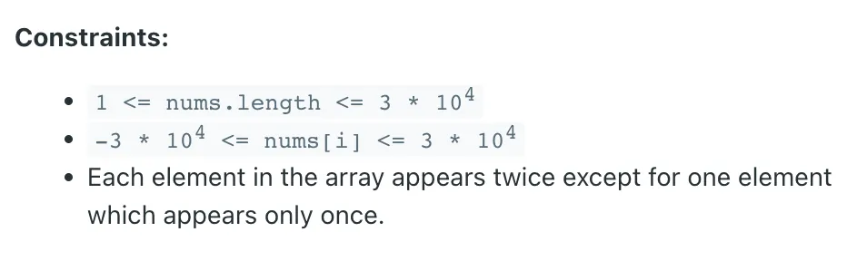

136. Single Number
考過的公司：Amazon
Question


✍🏽 My Solution
class Solution {
public int singleNumber(int[] nums) {
HashMap<Integer, Integer> map = new HashMap<>();
for (int i = 0; i < nums.length; i++) {
int count = 1;
if (map.containsKey(nums[i])) {
count += map.get(nums[i]);
}
map.put(nums[i], count);
}
for (int i = 0; i < nums.length; i++) {
if (map.containsKey(nums[i])) {
if (map.get(nums[i]) == 1) {
return nums[i];
}
}
}
return -1;
}
}
🧠 Thought Process
- Why did I choose this particular implementation?
- 哈希表Map存儲整數及出現次數，比對次數為1，將其數據return
- What is the time/space complexity of my solution? How do I know?
- time: O(n)
- space: O(n) 但這個不符合題目要求的O(1)
Solution #2 [XOR]
Runtime: 7 ms, faster than 40.90% of Java online submissions for Single Number. Memory Usage: 51.4 MB, less than 25.56% of Java online submissions for Single Number.
class Solution {
public int singleNumber(int[] nums) {
int result = 0;
for (Integer num : nums) {
result ^= num;
}
return result;
}
}
Explanation (in my words)
-
How does their solution work?
- Traverse the array and take the Bitwise XOR of each element.
- Return the value.
-
Why does this work ??
Because , the elements with frequency=2 will result in 0. And then the only element with frequency=1 will generate the answer.
-
异或（xor）是一个数学运算符。它应用于逻辑运算。异或的数学符号为“⊕”，计算机符号为“xor”。 二进制下异或运算法则： 1 xor 1=0 0 xor 0=0 1 xor 0=1 0 xor 1=1
- 因此十进制下相同数字异或结果为0，数字a与0异或结果仍为原来的数字a。
- 因此本题中异或全部的元素的结果就是那个只出现1次的元素。
- What is the space/time complexity of their solution?
- time: O(n)
- space: O(1)
Solution #1 [王爭-XOR位運算]
Explanation (in my words)
- How does their solution work?
- 課程最後會講
- What is the space/time complexity of their solution?
- time: O(n)
- space: O(1)